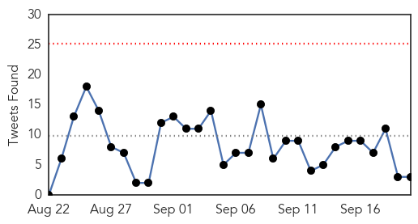

Influenza
30-Day Web Trend
3 alerts, 0 warnings

30-Day Twitter Trend
3 alerts, 0 warnings

Article Locations

Article Confidences

Top Articles:
- 0.995
- Flu season ahead: What you need to know to get protected
- 0.995
- Flu Season 2015 — Getting The Influenza Jab Could Save Your Life
- 0.994
- Doctors urging vaccinations for new flu season
- 0.989
- When should you get a flu vaccination?
- 0.983
- Beat the Flu Season Early -- Get a Flu Shot
- 0.975
- The Reedley Exponent > Ara > Health & Wellness
- 0.884
- Q Fever vaccine demand is only the "tip of the iceberg"
- 0.762
- Wild birds affected by bird flu first time in Ghana-
Top Tweets:
-
No tweets found for Sep 20, 2015
Ebola
30-Day Web Trend
0 alerts, 0 warnings

30-Day Twitter Trend
0 alerts, 0 warnings

Article Locations

Article Confidences
Top Articles:
- 1.000
- Liberia confirms third Ebola case in new outbreak
- 0.989
- Bungling by UN agency hurt Ebola response
- 0.989
- More Needs to Be Done in Fighting Malaria CDC Chief Says
- 0.974
- 10 critical mistakes in last year's Ebola outbreak
- 0.965
- Let’s work together to prevent epidemics
- 0.925
- For 2nd year, Ebola-hit Guinea’s Muslims barred from Hajj
- 0.880
- ETU Workers Protest over Benefits
- 0.732
- First Tourist Arrivals Ahead Of Tourism Season
Top Tweets:
- 0.981
- Ebola, a big public health issue - GhanaWeb http://t.co/zCqRPuuhyE ebola EVD
- 0.922
- Ebola, a big public health issue – GHS - Ghana Business News http://t.co/SogZxfvaEB ebola EVD
- 0.876
- AP Investigation: Bungling by UN agency hurt Ebola response - Hutchinson News http://t.co/t4yXMJylVR ebola EVD
- 0.751
- Ebola, a big public health issue - GhanaWeb http://t.co/eWvLmDVPZN
- 0.514
- RT: Ebola testing continues in Sierra Leone despite heavy rains and flooding. @PHE_uk http://t.co/Bjs4tpcUQ9